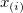
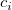
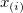
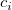
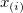
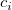
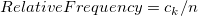
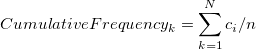

データは、離散変数の n個の観測標本で構成され、これは
/math-d2583020b138319a535bc3c88278ab33.png "x_i\,\!") で表され、i=1,...,nです。データを昇順にソートし、並べられたデータはで表され、i=1,...,nです。値 に対応する度数はで表され、これはi番目の値の度数です。 の相対度数と累積度数は次のように計算されます。
で表され、i=1,...,nです。データを昇順にソートし、並べられたデータはで表され、i=1,...,nです。値 に対応する度数はで表され、これはi番目の値の度数です。 の相対度数と累積度数は次のように計算されます。
データは、離散変数の n個の観測標本で構成され、これは で表され、i=1,...,nです。データを昇順にソートし、並べられたデータはで表され、i=1,...,nです。値 に対応する度数はで表され、これはi番目の値の度数です。 の相対度数と累積度数は次のように計算されます。
そして  で、k=1,...,nです。